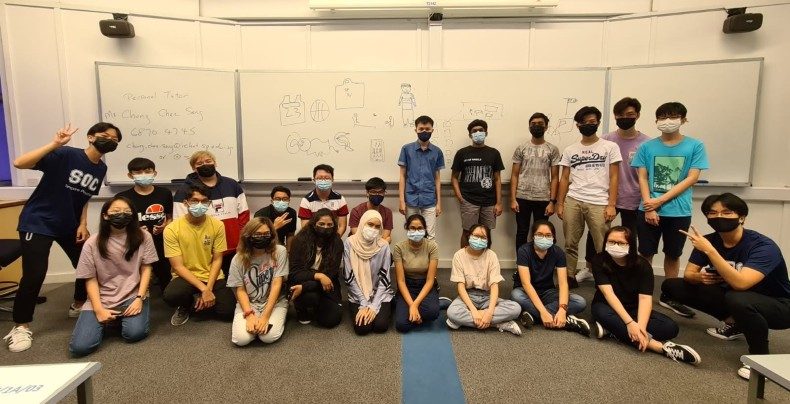

Current Experience in Poly & SOC
I had joined SP due to Early Admission Exercise (EAE) for ITE students, I was offered a place in Diploma in Information Technology(DIT) by Singapore Polytechnic after going through the interview and selection trial! It was definitely for me as I do not study any IT or Computing courses back in ITE, making me not have much hands on experiece with IT. However I am thankful to be DIT as I have amazing classmates and friends in this course, whenever I needed help in my school work, they would not hesistate to help me and teaches me till I understand.

By joining in DIT, you will have a strong foundation not only in Infocomm Technology, but in problem-solving and communication skills as well. As our course teaches many basics in our first year to prepare us for the next two years in Poly, not only do we learn more about IT, but we learn soft skills such as writing report, presentation and research skills. DIT school timetable is very flexible too, as for my class, we do not have to return to school on Mondays which gives us extra time to finish up assignements or self revision, also some of our materials are online which we can choose anytime to watch them before on our free time to prepare for the next lesson.
In addition, DIT offers us three different specialisations/tracks:
- Software & Applications - Software Development
- Software & Applications - User Experience (UX) Design
- Immersive Simulation
DIT allows students to apply to relevant courses offered locally at NUS, NTU, SIT, SUTD and SMU. You can also gain direct entry into the second or third year of study in relevant undergraduate degree courses in countries including Australia and the United Kingdom. After completeing my Diploma, I will be pursuing a Degree at our local University, or if I am given the chance, I would like to apply for University overseas.
Otherwise, after graduating from DIT, there are also many jobs opporrtunities for you. These includes:
- Analyst Programmer
- Applications Developer
- IT Business Analyst
- Information Systems Officer
- Full Stack Web Developer